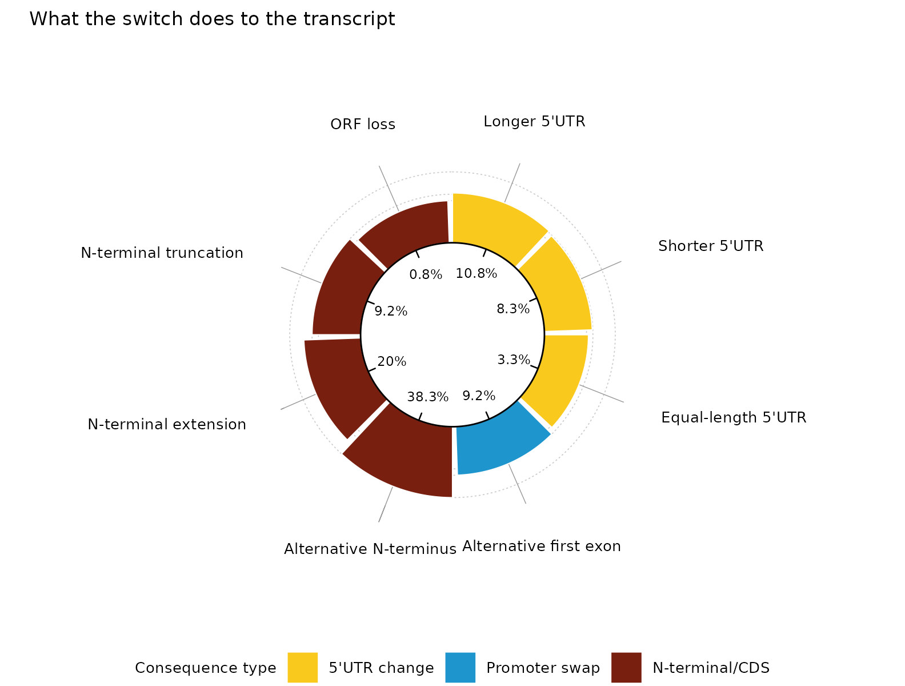
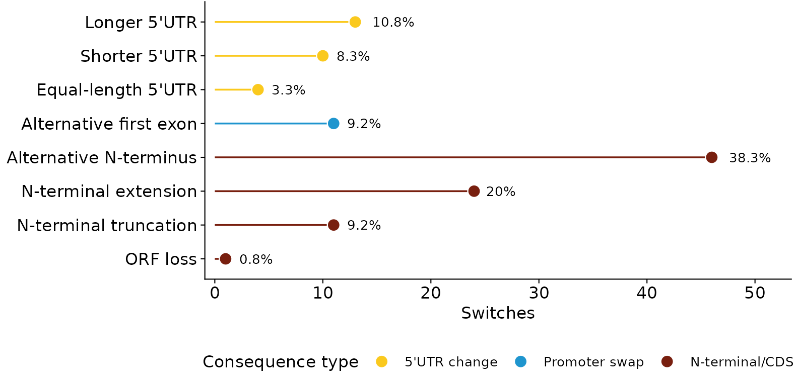
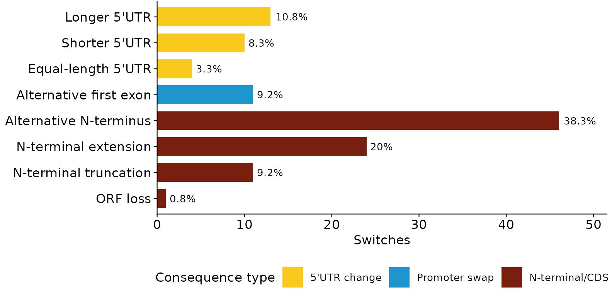
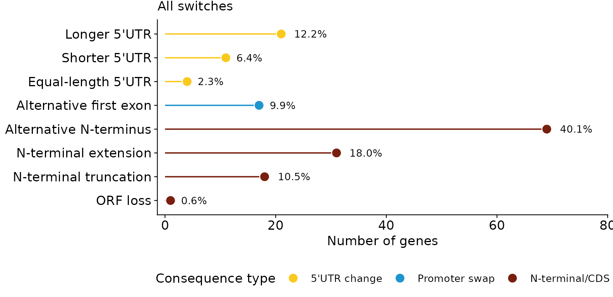

The question
A gene fires from two promoters. The browser shows two transcripts that start in different places — but what does that do? Sometimes nothing to the protein: the coding sequence is identical and only the 5′ UTR changed, which is a regulatory event. Sometimes the protein itself gains or loses an N-terminus. Those are different biological claims, and a picture of the two transcripts does not distinguish them.
classify_consequence() answers the question from the
open reading frames.
The decision tree
Write and for the peptides the reference and alternative isoforms encode, and , for their 5′ UTR lengths.
One isoform codes and the other does not. is an ORF loss; the reverse is an ORF gain. If neither codes, the pair is unclassified — blaming the start site for an ORF that was never there would be wrong.
The protein is untouched (). The change is purely 5′. If the two first exons are disjoint and the alternative site is downstream, the gene has switched promoters outright: promoter swap. Otherwise it is a 5′ UTR change,
longer,shorterorequalby the sign of .The proteins differ. If ends with , the alternative protein is the reference one with its N-terminus removed: N-terminal truncation. If ends with , it is an extension. Otherwise the N-terminus is simply different: alternative N-terminus.
The order matters. A 5′ UTR change wins over everything that looks dramatic in the genome browser, because if the protein is identical the consequence is regulatory however far apart the two start sites are.
The distal guard
Before any of that, the reciprocal overlap of the two transcript spans is checked:
When
the two “isoforms” do not overlap at all. That is not one transcription
unit with two start sites, it is two separate transcripts sharing a gene
label, and such pairs are marked "Distal (excluded)" rather
than classified.
Classifying
The input is one row per switch, describing both isoforms:
switches <- data.frame(
gene_name = c("Reg1", "Swap1", "Ext1", "Trunc1", "Dead1"),
strand = "+",
main_protein = c("MKVLAAGIV", "MKVLAAGIV", "MKVLAAGIV", "MKVLAAGIV", "MKVLAAGIV"),
alt_protein = c("MKVLAAGIV", "MKVLAAGIV", "MQQPMKVLAAGIV", "AAGIV", ""),
main_utr5_len = c(100, 100, 100, 100, 100),
alt_utr5_len = c(350, 100, 100, 100, 100),
main_first_exon_start = 1000, main_first_exon_end = 1200,
alt_first_exon_start = c(1050, 9000, 1050, 1050, 1050),
alt_first_exon_end = c(1250, 9200, 1250, 1250, 1250),
main_tss = 1000,
alt_tss = c(1050, 9000, 1050, 1050, 1050),
main_tx_start = 1000, main_tx_end = 40000,
alt_tx_start = c(1050, 9000, 1050, 1050, 1050), alt_tx_end = 40000
)
res <- classify_consequence(switches)
res[, c("gene_name", "category", "subtype", "d_utr5_bp")]
#> gene_name category subtype d_utr5_bp
#> 1 Reg1 5'UTR change longer 250
#> 2 Swap1 Promoter swap alt first exon 0
#> 3 Ext1 N-terminal/CDS N-term extension 0
#> 4 Trunc1 N-terminal/CDS N-term truncation 0
#> 5 Dead1 N-terminal/CDS ORF loss 0Calling the ORFs yourself
If you have transcript models and a genome, orf_table()
splices each transcript and calls its reading frame, producing the
columns above.
orfs <- orf_table(models, genome = BSgenome.Hsapiens.UCSC.hg38::Hsapiens)
head(orfs[, c("tx_id", "aa_len", "utr5_len", "n_uATG")])find_orf() is the piece that does the work, and is
useful on its own:
find_orf("GGGATGAAAGGGCCCTAAGGG", min_aa = 3)
#> $protein
#> [1] "MKGP"
#>
#> $start
#> [1] 4
#>
#> $end
#> [1] 18
#>
#> $utr5_len
#> [1] 3
#>
#> $aa_len
#> [1] 4
#>
#> $n_uATG
#> [1] 0The n_uATG count matters for the longer
subtype in particular: an AUG gained in a lengthened 5′ UTR can open an
upstream reading frame and suppress translation of the main one, which
is what makes “longer 5′ UTR” a claim about regulation rather than a
curiosity.
Drawing the composition
The shipped demo table holds 180 synthetic switches, classified by the real decision tree.
d <- utils::read.delim(
system.file("extdata", "demo_consequence.tsv", package = "omakase")
)
consequence_summary(d, filter = both_full_length == 1)
#> category subtype n label proportion
#> 1 5'UTR change longer 13 Longer 5'UTR 10.8333333
#> 2 5'UTR change shorter 10 Shorter 5'UTR 8.3333333
#> 3 5'UTR change equal 4 Equal-length 5'UTR 3.3333333
#> 4 Promoter swap alt first exon 11 Alternative first exon 9.1666667
#> 5 N-terminal/CDS alt N-terminus 46 Alternative N-terminus 38.3333333
#> 6 N-terminal/CDS N-term extension 24 N-terminal extension 20.0000000
#> 7 N-terminal/CDS N-term truncation 11 N-terminal truncation 9.1666667
#> 8 N-terminal/CDS ORF loss 1 ORF loss 0.8333333The default figure is a radial donut. Each subtype gets an equal angular sector, so a rare category is as legible as a common one, and the radius carries the abundance:
plot_consequence(d, filter = both_full_length == 1,
title = "What the switch does to the transcript")
Three other styles are available when a ring is not what you want:
plot_consequence(d, filter = both_full_length == 1, style = "lollipop")
plot_consequence(d, filter = both_full_length == 1, style = "bar")
Every style returns a ggplot, so the usual adjustments
apply:
plot_consequence(d, style = "lollipop") +
ggplot2::labs(title = "All switches", x = "Number of genes")